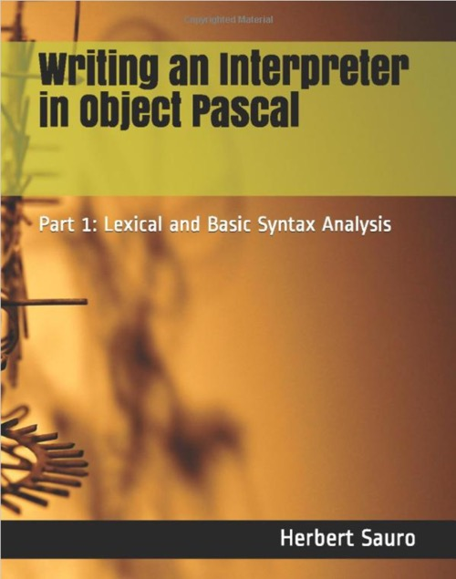

Writing an Interpreter in Object Pascal: Part 1: Lexical and Basic Syntax Analysis
Writed by : Herbert Sauro
Published date : 06/01/2019
ISBN-10 : 1732548609
ISBN-13 : 9781732548602
Language :  English
English
Web site : https://www.objectpascalinterpreter.com/part-i
About Writing an Interpreter in Object Pascal: Part 1: Lexical and Basic Syntax Analysis
This is part 1 of a series that will show you how to write an interactive interpreter in Object Pascal. Part 1 of the series will cover introductory material including a description of the language we’ll create, a full lexical analyzer for the language, how to use DUnitX for unit testing, and an introduction to the essential concepts in syntax analysis, recursive descent, grammar, and EBNF. Along the way, we’ll create a simple REPL, give a detailed discussion of how to parse expressions and build a simple interactive calculator to illustrate the theory. The book provides fully working code and explains in plain English how the code works and why certain decisions were made, including alternative designs. The book makes liberal use of code throughout the book chapters. Everything is done without the help of third-party tools such as Yacc, ANTLR or Flex. All you need is a standard installation of Free Pascal or Embarcaderos’s Delphi (including the free community edition).
The text is geared to hobbyists and midlevel developers who need an accessible introduction to lexical analysis and parsing. It’s also for students starting out in compiler and interpreter design and need something more digestible.
All source code is open source under Apache 2.0 and available from Github.
Where to buy ?
This book has the ISBN13 "9781732548602".
If it is still available for sale, you can order it in your favorite bookstore, by its publisher or online at
Amazon CA,
Amazon FR,
Amazon JP,
Amazon UK or
Amazon USA depending on your country.
Table of content
Introduction
a) Why Object Pascal
b) What is an interpreter
c) Parts of an interpreter
The Rhodus Language
Lexical Analysis
Initial API
Input streams
Retrieving tokens
First run
Adding more tokens
Testing
Introduction to testing
Using DUnitX
An Interactive Console
Introduction to Syntax Analysis
Grammar
Production rules
LL(k)
Recursive descent
Factoring, the dangling else
Left recursion
Ambiguous Grammars
A simple calculator
Syntax trees
Adding exponentiation and the unary minus
Testing the Calculator
Adding Assignments and Variables
Using a queue for token lookahead
Updating the syntax analyzer
Updating the lexical analyzer
Building a Recognizer
Appendix EBNF